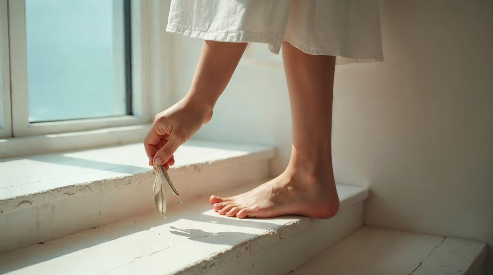
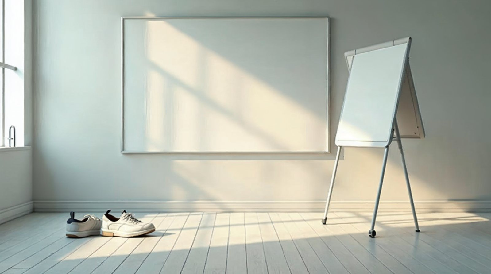
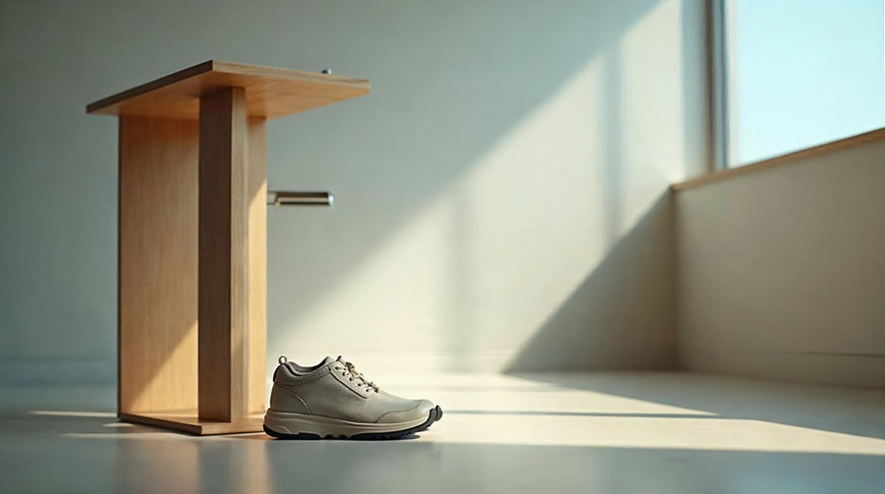

이종호 한의사 감수좋은꿈참사랑한의원 대표원장 (한의사 면허번호 19769)발행 2026-11-24 · 수정 2026-11-26
이 글의 차례
오래 서서 강의할 때는 한쪽 다리에만 기대지 말고 체중을 번갈아 싣고, 쉬는 시간마다 발목을 움직여 주는 것이 허리와 종아리 부담을 나누는 기본입니다. 오전부터 밤까지 강의가 이어지는 날이면 집에 돌아와 종아리가 단단하게 뭉치고 허리가 뻐근하다는 강사가 많습니다.
하룻밤 자고 나면 가라앉는 뻐근함이라면 신발과 서는 습관부터 바꿔 볼 수 있습니다. 아침에도 종아리가 무겁게 남아 있거나 밤에 쥐가 나서 깨는 날이 일주일에 여러 번이라면 한 번 살펴보시는 것이 좋습니다.
왜 이런 불편이 생길 수 있나요
- 오래 서 있으면 종아리 근육이 계속 몸을 버티는 일을 해서 저녁이 되면 뭉치고 무거워지기 쉽습니다.
- 한쪽 다리에 체중을 싣는 습관이 있으면 골반과 허리 한쪽에 긴장이 몰릴 수 있습니다.
- 교탁에 한 손을 짚고 몸을 기울이는 자세가 버릇이 되면 같은 쪽 허리와 골반이 더 뻐근해지기도 합니다.
- 굽이 딱딱하거나 높은 신발은 발과 종아리, 허리까지 전해지는 충격에 영향을 줄 수 있습니다.
- 강의실이 추워 다리가 차가운 날에는 종아리가 더 단단하게 굳는다고 말하는 분이 있습니다.
- 물을 적게 마시고 짠 식사를 한 날, 끼니를 거르고 커피로 버틴 날 다리가 더 붓거나 쥐가 잘 난다고 느끼는 분도 있습니다.
먼저 이렇게 여쭙니다
- 하루에 서 있는 시간이 얼마나 되나요?
- 강의할 때 주로 어떤 신발을 신나요?
- 저녁이 되면 다리가 붓거나 쥐가 나나요?
- 아침에 일어났을 때도 종아리가 무겁게 남아 있나요?
- 허리는 서 있을 때와 앉을 때 중 언제 더 불편한가요?
- 강의할 때 교탁에 기대거나 한쪽 다리에 체중을 싣는 편인가요?
일상에서 먼저 해 볼 수 있는 것
- 쿠션이 있고 굽이 낮은 신발 신기
- 한쪽 다리에만 기대지 말고 무게를 번갈아 싣기
- 교탁 아래에 낮은 발판을 두고 한쪽 발을 번갈아 올려 두기
- 쉬는 시간에 발목을 위아래로 움직이기
- 강의 사이 물을 나눠 마시고 끼니를 거르지 않기
- 앉아서 골프공 같은 작은 공을 발바닥 아래에 두고 1~2분 굴리기(쥐가 나면 멈추기)
- 퇴근 후 다리를 쿠션 위에 올려 잠시 쉬기
- 강의실을 옮기는 짧은 이동 시간에는 서두르지 말고 발뒤꿈치부터 닿게 천천히 걸어 종아리를 부드럽게 움직여 주기
종아리 뭉침과 비슷한 다른 불편은 어떻게 구별하나요?
오래 서 있어 생기는 뻐근함은 대개 저녁에 심하고 자고 나면 줄어드는 흐름을 보입니다. 그런데 비슷해 보여도 원인이 다른 경우가 있어, 저는 아픈 모양과 시간대를 나눠 여쭙습니다.
- 근육이 지쳐서라면 종아리 전체가 단단하고 묵직하며, 누르면 시원하면서 아프고 쉬면 덜해집니다.
- 다리의 혈액 순환이 느려서라면 발목 주변이 붓고 저녁에 양말 자국이 깊으며, 다리를 올리고 누우면 가벼워집니다.
- 허리에서 내려오는 경우라면 엉덩이부터 허벅지 뒤, 종아리 바깥쪽으로 줄을 긋듯 저리거나 당기고, 허리를 숙이거나 오래 앉을 때 더 불편합니다.
- 발바닥이 원인이라면 아침에 첫발을 디딜 때 발뒤꿈치가 아프고, 조금 걸으면 풀렸다가 오래 서 있으면 다시 아파집니다.
- 혈관이 눈에 띄게 튀어나와 있다면 다리 정맥 상태를 따로 확인해 보시는 것이 좋습니다.
이 가운데 두세 가지가 함께 있는 경우도 있습니다. 예를 들어 종아리가 단단하게 뭉치면서 저녁마다 발목이 붓고, 허리는 앉았다 일어설 때 불편한 경우라면 서 있는 시간과 앉아 있는 시간을 모두 살펴야 합니다.

상황별 예시
- 예를 들어 오전부터 밤까지 단과 강의를 연달아 하는 강사의 경우, 강의 사이 쉬는 시간이 짧아 앉지도 못하고 다음 강의실로 옮기는 일이 많습니다. 쉬는 시간마다 1~2분이라도 앉아 발목을 돌리고, 저녁 강의 전에는 잠시 다리를 올려 두는 시간을 만들어 볼 수 있습니다.
- 예를 들어 새 학기를 앞두고 굽이 딱딱한 구두로 바꾼 강사의 경우, 몇 주 사이 저녁마다 종아리와 허리가 함께 무거워질 수 있습니다. 강의할 때만이라도 쿠션 있는 신발로 바꿔 신고 차이를 살펴봅니다.
- 예를 들어 강의하는 날은 종일 서 있고 쉬는 날은 오래 앉아 교재를 만드는 경우, 서 있는 날과 앉아 있는 날 중 언제 허리가 더 불편한지 나눠 보면 살필 방향을 정하는 데 도움이 됩니다. 앉아서 일하는 날에도 한 시간에 한 번은 일어나 걸어 보세요.
스스로 점검해 보세요
- 하루에 여섯 시간 넘게 서서 강의한다
- 강의할 때 한쪽 다리나 교탁에 기대는 습관이 있다
- 저녁이 되면 양말 자국이 깊게 남을 만큼 다리가 붓는다
- 밤에 종아리에 쥐가 나서 깨는 날이 있다
- 아침에 일어나도 종아리가 무겁고 단단하다
- 한쪽 다리만 붓고 붉어지거나, 다리가 저리고 힘이 빠진다
앞의 다섯 가지는 신발과 서는 습관, 쉬는 시간부터 바꿔 볼 신호입니다. 마지막 항목은 오래 서 있어 생기는 뭉침과는 원인이 다를 수 있는 신호입니다.
강의 중 서 있는 자세는 이렇게 바꿔 보세요
강의 중에는 자세를 신경 쓸 여유가 없어서, 의식하지 않아도 되는 장치를 몇 가지 만들어 두는 것이 도움이 됩니다.
- 교탁 아래나 칠판 앞에 10~15cm 높이의 발판을 두고, 판서할 때와 설명할 때 올리는 발을 바꾸기
- 교탁에 팔을 짚고 기대는 대신 양손을 가볍게 얹는 정도로만 쓰기
- 설명하는 동안 강의실 앞쪽을 천천히 걸으며 말하기(가만히 서 있을 때보다 종아리 부담이 덜할 수 있습니다)
- 판서할 때 무릎을 꼿꼿이 펴서 잠그지 말고 살짝 풀어 두기
- 강의실이 추우면 무릎 아래가 덮이는 바지나 얇은 레깅스로 다리를 따뜻하게 하기
이 가운데 발판은 바로 시작할 수 있는 방법입니다. 한쪽 발을 올려 두면 허리가 덜 젖혀져 허리 아래쪽 긴장을 덜 수 있습니다.
쥐가 났을 때는 어떻게 하나요?
밤에 종아리에 쥐가 나면 깜짝 놀라 다리를 움켜쥐게 되는데, 몇 가지 순서를 알아 두면 덜 당황하게 됩니다.
- 다리를 쭉 편 채 발끝을 몸 쪽으로 천천히 당기기, 손이 닿지 않으면 수건을 발바닥에 걸어 당기기
- 뭉친 근육을 세게 주무르기보다 손바닥으로 따뜻하게 감싸 쓸어 주기
- 쥐가 풀린 뒤에는 바로 일어나지 말고 발목을 몇 번 돌린 뒤 천천히 움직이기
제가 강의에서 소개하는 기준이 하나 있습니다. 일주일에 두세 번 넘게 쥐가 난다면 근육이 쉽게 뭉치는 상태를 중요하게 살핀다는 것입니다. 그래서 진료실에서는 종아리만이 아니라 배와 팔의 앞뒤 근육도 눌러 보며 몸 전체의 긴장 정도를 가늠합니다.
쥐가 난 날짜와 시각, 그날 마신 물의 양을 적어 두면 반복되는 흐름이 보이기도 합니다. 자기 전에는 발이 차지 않게 양말을 신어 보세요. 드시는 약이 있다면 그 이름도 함께 알려 주세요.
퇴근 뒤 10분은 이렇게 정리해 보세요
집에 오자마자 앉아서 저녁을 먹고 다시 책상 앞에 앉으면, 종일 서 있던 다리는 풀릴 틈 없이 다음 날을 맞습니다. 씻기 전후 10분만 순서를 정해 두면 따로 운동 시간을 내지 않아도 됩니다.
- 따뜻한 물로 샤워하며 종아리와 발목에 물을 충분히 맞히기
- 바닥에 누워 다리를 벽이나 쿠션 위에 올리고 5분 정도 쉬기
- 누운 채 발목을 위아래로 천천히 스무 번쯤 움직이기
- 무릎을 가슴 쪽으로 번갈아 당기며 허리 아래를 가볍게 풀기
이 정리는 시원한 범위에서만 합니다. 다리가 저리거나 허리가 찌릿하면 그 동작은 빼고, 어떤 동작에서 불편했는지 진료 때 알려 주세요.

한의원에서 함께 살필 수 있는 경우
- 오래 서 있은 뒤 허리가 뻐근한 경우 자세와 골반의 균형을 함께 살핍니다.
- 종아리가 자주 뭉치고 쥐가 나는 경우 잠과 생활 습관을 함께 살핍니다.
- 다리가 자주 붓는 경우 서 있는 시간과 물·짠 음식 섭취를 함께 살핍니다.
좋은꿈참사랑한의원에서는 첫 방문 때 맥부터 짚어 보며 하루 서 있는 시간과 강의 일정, 신발, 어떤 동작에서 아픈지를 충분히 듣습니다. 같은 뻐근함이라도 몇 시부터 시작되는지, 다음 날 아침까지 남는지에 따라 살필 곳이 달라집니다.
그 뒤 서 있는 모습과 걷는 모습, 골반의 기울기, 허리를 숙이거나 젖힐 때와 한 발로 설 때 어디가 불편한지, 종아리의 뭉침과 붓기를 확인합니다. 저림이 있다면 다리의 감각과 힘을 함께 보고, 필요하다고 판단될 때 초음파로 아픈 부위를 살핍니다.
상태에 맞춰 침·약침·추나·온열 등을 정하고, 귀가 전에는 강의 중 체중을 싣는 요령과 집에서 지켜볼 점, 다음 진료 때 다시 확인할 동작을 알려 드립니다.
강의용 신발은 어떻게 고르면 좋을까요?
신발은 하루 여섯 시간 넘게 서 있는 분께 가장 먼저 손볼 수 있는 부분입니다. 출퇴근할 때 신는 구두와 강의할 때 신을 신발을 따로 두는 것도 방법입니다.
- 굽은 2~3cm 정도로 낮되 완전히 납작하지 않은 것
- 발뒤꿈치를 감싸 주고 발볼이 끼지 않는 것
- 바닥이 너무 딱딱하지 않고 앞쪽이 자연스럽게 구부러지는 것
- 오후에 발이 부은 상태에서 신어 보고 고르기
새 신발은 처음 며칠 짧은 강의에서 먼저 신어 보고, 종아리와 허리의 저녁 느낌을 비교해 보세요. 오래 신어 바닥이 한쪽으로 닳은 신발은 서 있는 자세를 기울게 할 수 있어, 밑창이 닳은 모양도 진료 때 보여 주시면 참고가 됩니다.

얼마나 지켜보고 언제 상담할까요
- 신발과 서는 습관을 바꾼 뒤 2주 정도는 저녁과 아침의 다리 상태를 지켜보세요.
- 2~3주가 지나도 저녁마다 같은 정도로 뻐근하거나 아침까지 남는다면 상담을 권합니다.
- 밤에 쥐가 나서 깨는 날이 일주일에 두세 번 넘게 이어진다면 더 기다리지 말고 상담해 보세요.
강의 사이 짧은 시간에는 무엇을 먹고 마실까요?
강의가 이어지는 날에는 끼니를 거르고 커피로 버티기 쉽습니다. 몸이 쓸 물과 에너지가 모자란 채로 종아리가 하루 종일 버티는 셈입니다.
- 커피는 오전 한두 잔으로 정하고, 오후에는 물이나 보리차로 바꾸기
- 끼니를 놓칠 것 같은 날은 바나나나 삶은 달걀, 우유처럼 바로 먹을 수 있는 것을 챙기기
- 저녁 늦게 짠 국물 음식을 먹은 다음 날 아침 붓기가 어떤지 살펴보기
이렇게 기록해 오시면 상담이 쉬워집니다
- 하루 서 있는 시간과 강의 사이 쉬는 시간
- 주로 신는 신발의 종류와 굽 높이
- 저녁에 다리가 붓는 정도와 쥐가 나는 시간대
- 아침과 저녁의 발목 사진(양말 자국이 남는지)
- 쥐가 난 날의 강의 시간, 물과 커피의 양, 끼니를 거른 날
- 허리가 더 불편한 자세(서 있을 때, 앉았다 일어날 때)
- 발판이나 새 신발처럼 바꿔 본 것과 그 뒤 저녁 다리 느낌의 차이
종일 서서 목소리까지 내셨으니 저녁의 다리가 무거운 것도 무리가 아닙니다. 그 다리로 오늘도 강의실을 몇 번이나 오가셨을지요. 다음에 오시면 쥐가 나서 깬 밤이 몇 번이었는지, 아침의 종아리는 어땠는지부터 여쭙겠습니다.
이런 증상은 먼저 확인이 필요합니다
- 한쪽 다리만 갑자기 붓거나 붉어지며 아픈 경우, 또는 숨이 차거나 가슴이 아픈 경우
- 다리에 힘이 빠지거나 대소변 보기가 어려워진 경우
이런 신호가 있으면 한의원보다 가까운 병원이나 응급실을 먼저 찾으세요.
관련 글
- 하루 종일 서서 일하면 저녁마다 허리가 묵직할 때 어떻게 살피나요?
- 쥐가 자주 나고 허리나 종아리가 뭉칠 때는 무엇을 함께 살피나요?
- 발 저림이나 뻐근함, 집에서 공으로 풀어도 되나요?

여쭙는 것
- 하루에 서 있는 시간이 얼마나 되나요?
- 강의할 때 주로 어떤 신발을 신나요?
- 저녁이 되면 다리가 붓거나 쥐가 나나요?
생활에서 해 볼 것
- 쿠션이 있고 굽이 낮은 신발 신기
- 한쪽 다리에만 기대지 말고 무게를 번갈아 싣기
- 교탁 아래에 낮은 발판을 두고 한쪽 발을 번갈아 올려 두기
한의원에서 함께 살필 것
- 오래 서 있은 뒤 허리가 뻐근한 경우 자세와 골반의 균형을 함께 살핍니다.
- 종아리가 자주 뭉치고 쥐가 나는 경우 잠과 생활 습관을 함께 살핍니다.
- 다리가 자주 붓는 경우 서 있는 시간과 물·짠 음식 섭취를 함께 살핍니다.
먼저 확인이 필요한 신호
- 한쪽 다리만 갑자기 붓거나 붉어지며 아픈 경우, 또는 숨이 차거나 가슴이 아픈 경우
- 다리에 힘이 빠지거나 대소변 보기가 어려워진 경우
한눈에 보는 표
| 구분 | 핵심 |
|---|---|
| 여쭙는 것 | 하루에 서 있는 시간이 얼마나 되나요? 강의할 때 주로 어떤 신발을 신나요? |
| 생활에서 해 볼 것 | 쿠션이 있고 굽이 낮은 신발 신기 한쪽 다리에만 기대지 말고 무게를 번갈아 싣기 |
| 한의원에서 함께 살필 것 | 오래 서 있은 뒤 허리가 뻐근한 경우 자세와 골반의 균형을 함께 살핍니다. 종아리가 자주 뭉치고 쥐가 나는 경우 잠과 생활 습관을 함께 살핍니다. |
| 먼저 확인이 필요한 신호 | 한쪽 다리만 갑자기 붓거나 붉어지며 아픈 경우, 또는 숨이 차거나 가슴이 아픈 경우 다리에 힘이 빠지거나 대소변 보기가 어려워진 경우 |
자주 묻는 질문
압박 스타킹을 신어도 되나요?
다리 붓기가 잦다면 도움이 될 수 있지만, 피부나 혈관 질환이 있다면 먼저 확인하는 것을 권합니다.
강의 중에 의자에 앉아도 괜찮을까요?
가능하다면 앉았다 서기를 섞는 것이 한 자세로 오래 있는 것보다 몸 부담을 나누는 데 도움이 됩니다.
강의 중에 할 수 있는 간단한 동작이 있나요?
판서 사이에 발뒤꿈치를 들었다 내리는 동작을 열 번쯤 하거나 체중을 양발에 번갈아 실어 보세요. 종아리를 조금씩 움직여 주면 한 자세로 버티는 시간을 줄일 수 있습니다.
진료 시간은 어떻게 되나요?
좋은꿈참사랑한의원은 평일 09:30~20:00(점심 13:00~14:00), 토·일·공휴일 09:30~15:00에 진료합니다.
좋은꿈참사랑한의원은 재진 때 지난번 이야기부터 이어서 여쭙니다. 진료시간과 예약은 오시는 길에서 확인하세요.
어디서 상담받을 수 있나요?
좋은꿈참사랑한의원은 서울 동작구 만양로2길 2 신성빌딩 3층·5층(서울 동작구 상도동, 7호선 상도역 3번 출구 근처)에 있습니다. 한의사 3명(이종호 대표원장, 조영기 수석진료원장, 정원영 진료원장)이 진료합니다. 진료시간은 평일 09:30~20:00(점심 13:00~14:00), 토·일·공휴일 09:30~15:00이며, 방문 전 전화로 확인을 권합니다. 예약은 네이버 예약, 카카오톡 상담, 전화 02-815-7510로 받습니다.
이 글은 일반적인 건강 정보이며 개인의 진단이나 치료를 대신하지 않습니다. 증상이 있거나 복용 중인 약이 있다면 진료를 통해 확인하세요. 치료 효과는 개인마다 다를 수 있습니다.
작성 기준: 일반적으로 알려져 있는 건강 정보를 참고해 정리했습니다(대표원장 감수). 증상 기록은 1~2주 동안 하루 1회, 비슷한 시간에 적어 오시면 지난 상태와 비교하기 쉽습니다.